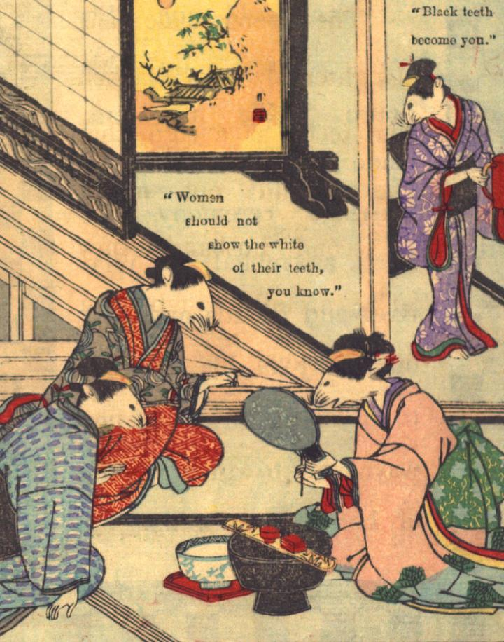

花嫁となる鼠がお歯黒をしている。年長の女鼠2体がそれを手助けしている。若い娘鼠が、朱色の容器を運んできている。
著作者：David Thompson／出典：親書誌：U426_nichibunken_0112：Nedzumi no Yome-Iri／日付：2006／資源識別子：U426_nichibunken_0112_0005_0000
Copyright (c)2010- International Research Center for Japanese Studies, Kyoto, Japan. All rights reserved.